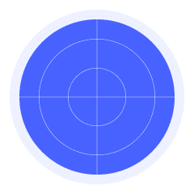
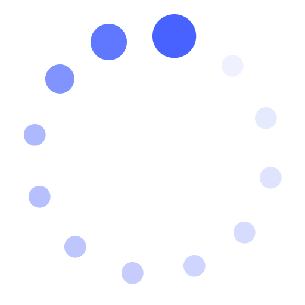

确认信息

1、将未配置过的子路由WAN口与主路由LAN口通过网线连接；
2、接通子路由电源，等待3分钟后指示灯变成红色或蓝灯常亮；
3、同时长按主路由和子路由的JOY键至蓝灯闪烁，开始组网；
1、将未配置过的路由器作为子路由，放置在需要Wi-Fi信号覆盖的房间（如已配置请长按重置按键5秒以上进行重置）；
2、接通子路由电源，等待3分钟后指示灯变成红色或蓝灯常亮；
3、点击开始搜索；

搜索Mesh子路由...

正在连接Mesh子路由...